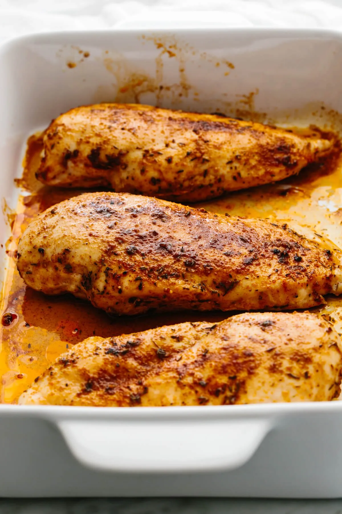

Baked Chicken Breast

Description
This recipe is a simple and flavorful baked chicken breast recipe that is zero risk high reward and will leave you craving for more the next time you make dinner.
All you need is about 35 minutes some chicken breast of any size , olive oil and some of this special seasoning and you will have a simple high protein and delicious meal.
Ingredients
- Boneless Skinless Chicken Breast
- Spices and Herbs- Paprika , Garlic Powder, Thyme , Salt and Pepper
- Olive Oil
Steps
- Begin preheating your oven to 425° Farenheight (220° Celcius).
- Now mix the combination of herbs of spices using a table-spoon of Paprika , Garlic Powder, Thyme , Salt and Pepper untill they have completly blended with each other.
- Next lightly coat both sides of the chicken with olive oil.
- Now coat both sides of the chicken with the blend of spices you just mixed.
- Now place the chicken breast in a baking dish shove it in the oven and bake it for 20-25 minutes but make sure at about 12 minutes you flip the chicken breast.
- After the 25 minutes the chciken is done but make sure you allow the chicken to simmer down and rest so the juices can flow in the meat.